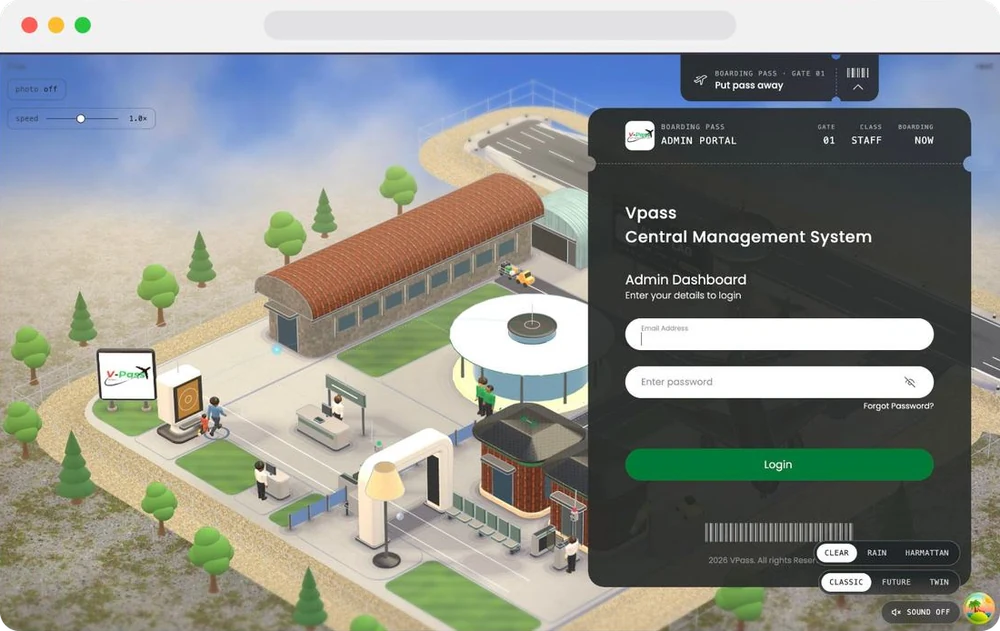

AFAAN VPass
VPass lets travellers register their identity before they reach the airport.Product · Systems
- Client
- Federal Airports Authority of Nigeria (FAAN)
- Role
- Product Designer · Barnksforte Technologies
- Problem
Airport ID checks relied on paper documents and manual checks. That meant delays, inconsistent passenger records and impersonation that was hard to catch.
FAAN needed passengers to register before they arrive, and staff to have tools to manage and monitor the checks.
- What I did
- I led product design for the VPass passenger app and admin portal, turning complex identity and verification rules into clear, simple flows. That covered user journeys, information architecture, onboarding, NIN and passport registration, biometric enrolment, face capture and form validation.
- Outcome
- VPass is now live, starting at the domestic terminals in Lagos and Abuja. Travellers register their identity and biometrics before they reach the airport, as part of FAAN’s digital and security push.
